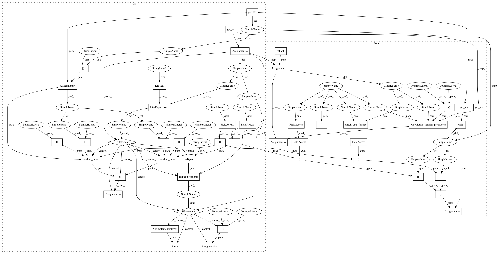

a120cb4377c48caba2d2dbb25f126a06568e01be,src/graph_transpiler/webdnn/frontend/tensorflow/ops/gen_nn_ops.py,,max_pool_handler,#Any#Any#,331
Before Change
assert ksize_nhwc[3] == 1
ksize_hw = ksize_nhwc[1:3]
stride_nhwc = tf_op.get_attr("strides") // type: List[int]
assert stride_nhwc[0] == 1
assert stride_nhwc[3] == 1
stride_hw = stride_nhwc[1:3]
padding_name = tf_op.get_attr("padding") // type: str
if padding_name == b"SAME":
padding = (padding_same(x.shape_dict[Axis.H], ksize_hw[0], stride_hw[0]),
padding_same(x.shape_dict[Axis.W], ksize_hw[1], stride_hw[1]))
elif padding_name == b"VALID":
padding = (0, 0)
else:
raise NotImplementedError(f"[TensorFlowConverter] MaxPool: padding "{padding_name}" is not supported yet.")
y, = MaxPooling2D(None, ksize=ksize_hw, stride=stride_hw, padding=padding)(x)
converter.set_variable(tf_op.outputs[0], y)
After Change
@TensorFlowConverter.register_handler("MaxPool")
def max_pool_handler(converter: TensorFlowConverter, tf_op: "tf.Operation"):
x = converter.get_variable(tf_op.inputs[0])
data_format = tf_op.get_attr("data_format")
check_data_format(x, data_format)
ksize = tuple(tf_op.get_attr("ksize")) // type: Tuple[int,...]
assert ksize[x.order.axes_dict[Axis.N]] == 1
assert ksize[x.order.axes_dict[Axis.C]] == 1
ksize = (ksize[x.order.axes_dict[Axis.H]], ksize[x.order.axes_dict[Axis.W]])
stride = tuple(tf_op.get_attr("strides")) // type: Tuple[int,...]
assert stride[x.order.axes_dict[Axis.N]] == 1
assert stride[x.order.axes_dict[Axis.C]] == 1
stride = (stride[x.order.axes_dict[Axis.H]], stride[x.order.axes_dict[Axis.W]])
x, padding = convolution_handler_preprocess(x, ksize=ksize, padding=tf_op.get_attr("padding"), dilation_rate=(1, 1),
data_format=data_format)
y, = MaxPooling2D(None, ksize=ksize, stride=stride, padding=padding)(x)
converter.set_variable(tf_op.outputs[0], y)
In pattern: SUPERPATTERN
Frequency: 3
Non-data size: 46
Instances
Project Name: mil-tokyo/webdnn
Commit Name: a120cb4377c48caba2d2dbb25f126a06568e01be
Time: 2017-12-15
Author: y.kikura@gmail.com
File Name: src/graph_transpiler/webdnn/frontend/tensorflow/ops/gen_nn_ops.py
Class Name:
Method Name: max_pool_handler
Project Name: mil-tokyo/webdnn
Commit Name: a120cb4377c48caba2d2dbb25f126a06568e01be
Time: 2017-12-15
Author: y.kikura@gmail.com
File Name: src/graph_transpiler/webdnn/frontend/tensorflow/ops/gen_nn_ops.py
Class Name:
Method Name: conv2_d_handler
Project Name: mil-tokyo/webdnn
Commit Name: a120cb4377c48caba2d2dbb25f126a06568e01be
Time: 2017-12-15
Author: y.kikura@gmail.com
File Name: src/graph_transpiler/webdnn/frontend/tensorflow/ops/gen_nn_ops.py
Class Name:
Method Name: avg_pool_handler
Project Name: mil-tokyo/webdnn
Commit Name: a120cb4377c48caba2d2dbb25f126a06568e01be
Time: 2017-12-15
Author: y.kikura@gmail.com
File Name: src/graph_transpiler/webdnn/frontend/tensorflow/ops/gen_nn_ops.py
Class Name:
Method Name: max_pool_handler